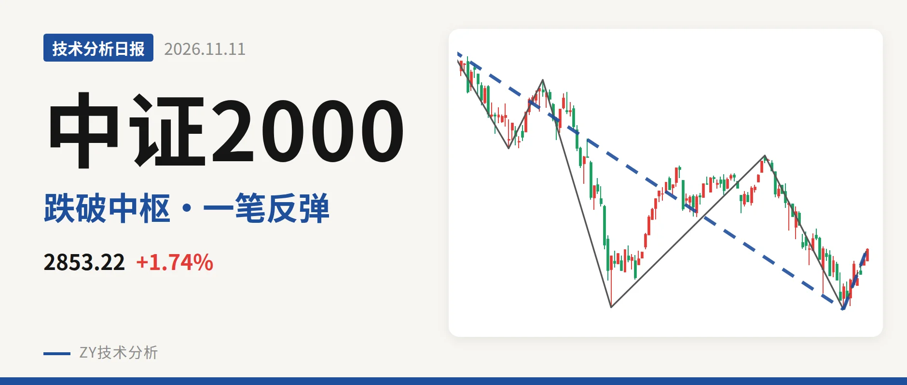

中证2000｜跌破3381中枢，2576点反弹仅一笔

最近日线中枢 3381.36—3593.19点，收盘位于中枢之下
一句话：跌破最近日线中枢，2576点类二买暂定，反弹尚不成线段
📉 走势结构：5月14日以来下跌还在延续
5月14日3768.08点见顶后，中证2000转入下跌走势，至今还在延续。更大级别上，2024年2月6日以来的上涨走势至2026年5月14日结束，这段上涨从1503.44点走到3768.08点，随后下跌走势已跌去31.6%。日线线段看，5月14日至11月2日的下跌线段从3768.08点到2576.02点，内含5笔，没有结束。11月2日至11月11日的反弹只有一笔，从2576点到2856.24点，涨10.9%，还未构成线段，只能视为下跌线段内部的回升。

📍 中枢与位置：跌破最近中枢，位于下沿15.6%下方
最近一个日线笔中枢是1月26日至3月23日的3381.36—3593.19点，中轴3487.28点。最新收盘2853.22点位于中枢下方，低于下沿约528点，幅度15.6%。之前2024年11月至2025年6月的中枢在2293.12—2547.90点，之后中枢上移到3381—3593点，中枢经历了一轮上移。但5月后的下跌使价格跌回中枢下方，且低于下沿超过15%，最近中枢对价格的牵引作用减弱。当前价位距中枢下沿较远，结构上处于中枢下方运行。
🎯 买卖点：卖点逐级走低，类二买暂定
日线笔级别卖点一个比一个低：5月14日一卖3768.08点、6月23日二卖3626.48点、9月22日三卖3280.29点。三个卖点后行情持续新低，说明卖点对应的调整级别在扩大，一卖之后的反弹未能创新高，二卖之后的反弹止步于3280点。线段级别上，11月2日类二买2576.02点所在线段是5月14日至11月2日的下跌线段，该线段还在延续，类二买只能视为暂定，会随这一笔的延续而变化。

⚡ 背驰：绿柱面积未减，DIF仍处零轴下
比较最近两笔同向下跌：6月23日至7月21日下跌笔从3626.48点到2585.35点，绿柱面积810，DIF低点-164.2；9月22日至11月2日下跌笔从3280点到2576点，价格创了新低，绿柱面积873反而更大，DIF低点-108.5虽有抬高，绿柱面积未同步缩小，不构成标准底背驰。当前11月2日以来的反弹笔红柱面积仅79，DIF高点-65.5仍在零轴之下，MACD的DIF和DEA双双在零轴下方，反弹力度偏弱。
🔍 关键位置：反抽不过3381点构成三卖
上方关键位置看3381点附近，即最近中枢下沿。反抽若回不到3381点上方，结构上构成对1月26日至3月23日中枢的日线三卖，下跌走势延续的概率较大。若重新站上3381点，则5月14日以来的下跌更可能只是中枢扩展，而非趋势性下跌。下方2576.02点是11月2日暂定类二买低点，若再度跌破且绿柱面积继续放大，下跌段延续。当前结构处于下跌走势延续中，价格在最近中枢下方、卖点逐级走低，反弹尚未构成线段。
⚠️ 本文为基于公开行情数据的缠论技术结构记录，由程序自动计算并生成，仅供学习交流，不构成任何投资建议。市场有风险，投资需谨慎。